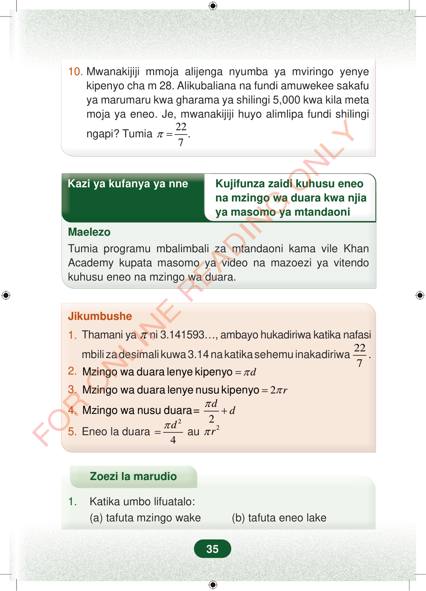

10.Mwanakijiji mmoja alijenga nyumba ya mviringo yenyekipenyo cha m 28. Alikubaliana na fundi amuwekee sakafuya marumaru kwa gharama ya shilingi 5,000 kwa kila metamoja ya eneo. Je, mwanakijiji huyo alimlipa fundi shilingingapi? Tumia22.7π=Kazi ya kufanya ya nneKujifunza zaidi kuhusu eneona mzingo wa duara kwa njiaya masomo ya mtandaoniMaelezoTumia programu mbalimbali za mtandaoni kama vile KhanAcademy kupata masomo ya video na mazoezi ya vitendokuhusu eneo na mzingo wa duara.Jikumbushe1.Thamani yaπni 3.141593…, ambayo hukadiriwa katika nafasimbili za desimali kuwa 3.14 na katika sehemu inakadiriwa227.2.dπ=Mzingo wa duara lenye kipenyo3.2rπ=Mzingo wa duara lenye nusu kipenyoddπ+Mzingo wa nusu duara24.= 25.Eneo la duara4dπ=au2rπZoezi la marudio1.Katika umbo lifuatalo:(a) tafuta mzingo wake (b) tafuta eneo lake35
10. Mwanakijiji mmoja alijenga nyumba ya mviringo yenye kipenyo cha m 28. Alikubaliana na fundi amuwekee sakafu ya marumaru kwa gharama ya shilingi 5,000 kwa kila meta moja ya eneo. Je, mwanakijiji huyo alimlipa fundi shilingi
ngapi? Tumia 22. 7 π =
Kazi ya kufanya ya nne Kujifunza zaidi kuhusu eneo
na mzingo wa duara kwa njia ya masomo ya mtandaoni
Maelezo Tumia programu mbalimbali za mtandaoni kama vile Khan Academy kupata masomo ya video na mazoezi ya vitendo kuhusu eneo na mzingo wa duara.
Jikumbushe
1. Thamani ya π ni 3.141593…, ambayo hukadiriwa katika nafasi
mbili za desimali kuwa 3.14 na katika sehemu inakadiriwa 22
7 . 2. d π = Mzingo wa duara lenye kipenyo
3. 2 r π = Mzingo wa duara lenye nusu kipenyo
d d π + Mzingo wa nusu duara
2
4. = 2
5. Eneo la duara
4 d π = au 2 r π
Zoezi la marudio
1. Katika umbo lifuatalo: (a) tafuta mzingo wake (b) tafuta eneo lake
35
Swali la 10 linaeleza nyumba ya mviringo yenye kipenyo cha mita 28. Linauliza gharama ya kuweka sakafu ya marumaru kwa shilingi 5,000 kwa kila mita ya eneo, ukitumia π = 22/7.10. Mwanakijiji mmoja alijenga nyumba ya mviringo yenye kipenyo cha m 28.Alikubaliana na fundi amuwekee sakafu ya marumaru kwa gharama ya shilingi 5,000 kwa kila meta moja ya eneo.Je, mwanakijiji huyo alimlipa fundi shilingi ngapi?Tumia <math><mrow><mi>π</mi><mo>=</mo><mfrac><mn>22</mn><mn>7</mn></mfrac></mrow></math>.Kazi ya kufanya ya nne kuhusu kujifunza zaidi eneo na mzingo wa duara kwa njia ya masomo ya mtandaoni. Maelezo yanamtaka mwanafunzi kutumia programu kama Khan Academy kupata video na mazoezi ya vitendo.Kazi ya kufanya ya nneKujifunza zaidi kuhusu eneo na mzingo wa duara kwa njia ya masomo ya mtandaoniMaelezoTumia programu mbalimbali za mtandaoni kama vile Khan Academy kupata masomo ya video na mazoezi ya vitendo kuhusu eneo na mzingo wa duara.Jikumbushe: thamani ya π ni takribani 3.14 au 22/7. Pia kuna kanuni za mzingo wa duara, mzingo wa nusu duara, na eneo la duara.Jikumbushe1. Thamani ya <math><mi>π</mi></math> ni 3.141593, ambayo hukadiriwa katika nafasi mbili za desimali kuwa 3.14 na katika sehemu inakadiriwa <math><mfrac><mn>22</mn><mn>7</mn></mfrac></math>.2. Mzingo wa duara lenye kipenyo = <math><mrow><mi>π</mi><mi>d</mi></mrow></math>3. Mzingo wa duara lenye nusu kipenyo = <math><mrow><mn>2</mn><mi>π</mi><mi>r</mi></mrow></math>4. Mzingo wa nusu duara = <math><mrow><mfrac><mrow><mi>π</mi><mi>d</mi></mrow><mn>2</mn></mfrac><mo>+</mo><mi>d</mi></mrow></math>5. Eneo la duara = <math><mfrac><mrow><mi>π</mi><msup><mi>d</mi><mn class="tml-lrg-pad">2</mn></msup></mrow><mn>4</mn></mfrac></math> au <math><mrow><mi>π</mi><msup><mi>r</mi><mn class="tml-sml-pad">2</mn></msup></mrow></math>Zoezi la marudio linaagiza mwanafunzi kutafuta mzingo na eneo la umbo lililotolewa. Namba ya ukurasa ni 35.Zoezi la marudio1. Katika umbo lifuatalo:(a) tafuta mzingo wake(b) tafuta eneo lake